汝窑宋瓷 · 宋代官窑艺术展厅
宋代五大名窑之首 | 天青釉传世国宝非遗工艺
一、汝窑经典天青釉传世器物
汝窑标志性雨过天青色温润内敛，釉层肥厚如玉，摒弃繁杂装饰，依靠纯粹釉色塑造高级美感，是北宋皇室专用御用瓷器，代表宋代审美巅峰。
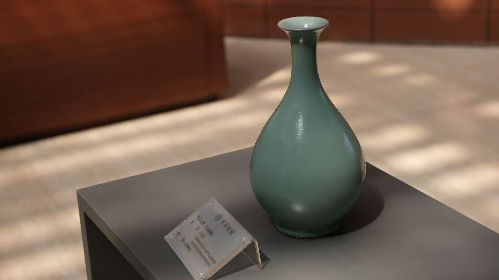
二、汝瓷天然开片纹理细节
烧制冷却时胎釉收缩差异自然形成蝉翼纹、蟹爪纹开片，每件器物纹路独一无二，无法人工复刻，是汝窑区别于其他窑口的核心识别特征。
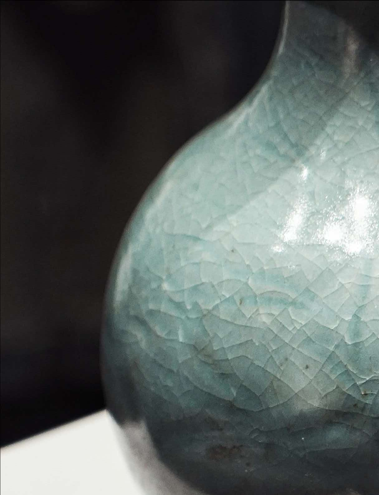
三、古法松木柴窑烧制工艺
传统汝瓷依靠松木柴火烧制，窑温、气氛、冷却速度都会直接影响釉色成色，工序繁复容错率极低，自古流传“十窑九不成”的行业说法。
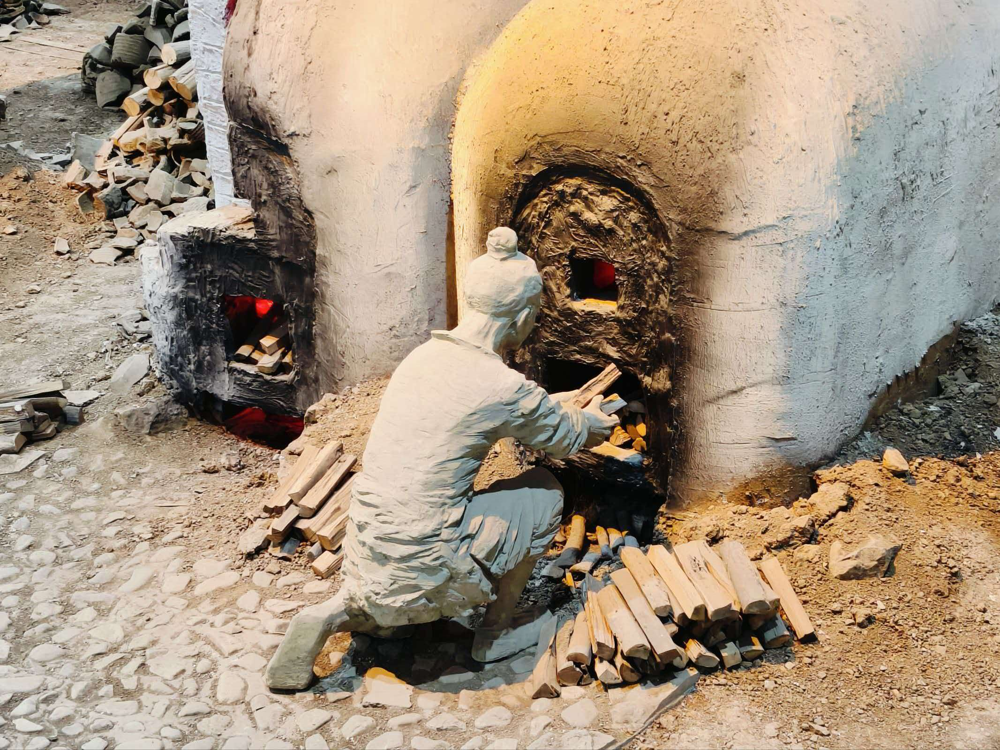
四、汝窑简约古典器型展示
汝瓷器型线条流畅端庄，无雕刻彩绘堆砌，仅依靠简洁轮廓营造素雅庄重气质，完美诠释宋代美学“大道至简”的核心追求。
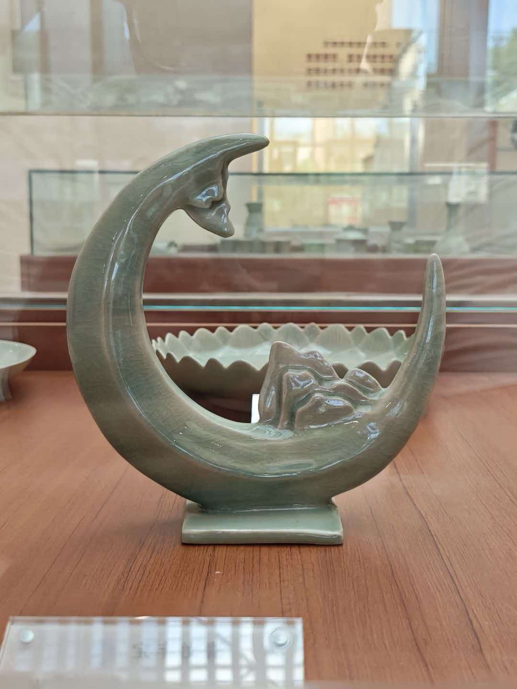
五、汝州清凉寺官窑考古遗址
河南汝州清凉寺为北宋汝官窑原生窑址，考古发掘出土大量瓷片、窑具，完整还原宋代皇家瓷厂生产布局，是研究汝窑历史的核心实物依据。
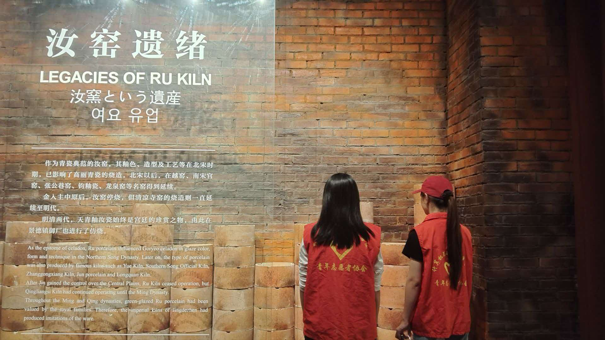
六、当代汝瓷非遗匠人创作
现代非遗匠人复原失传千年的天青釉配方，复刻全套手工制瓷工序，在传承宋代制式基础上创新现代器型，推动汝窑文化走进大众生活。
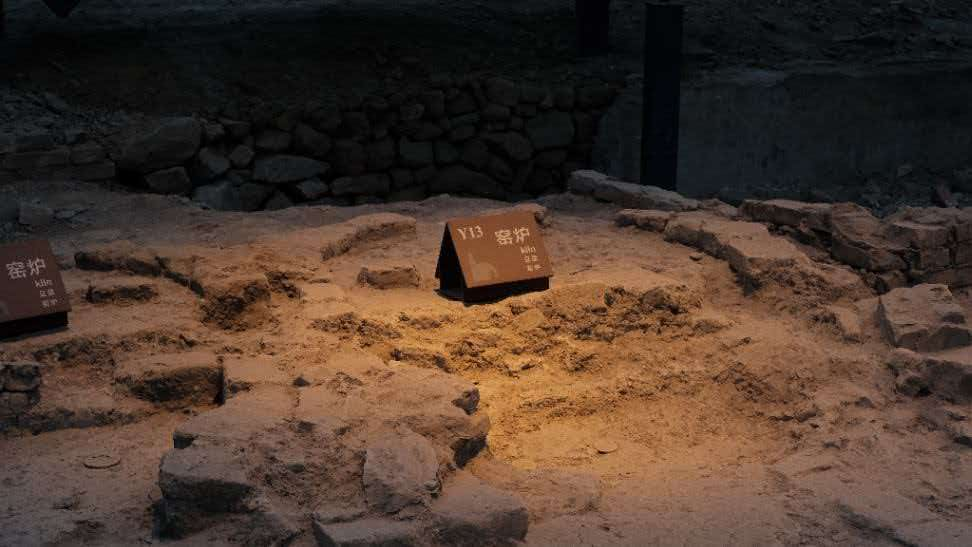
汝窑宋瓷整体综合介绍
汝窑因窑址坐落于北宋汝州得名，是宋代专为宫廷烧制御用瓷器的官窑，位列汝、官、哥、钧、定五大名窑之首，创烧于北宋初年，宋徽宗时期工艺达到艺术顶峰，所有成品专供皇室使用，民间严禁私自烧制、收藏汝瓷。靖康之变北宋覆灭后，窑场遭到损毁，完整烧制技艺彻底失传，官窑仅持续二十余年烧制周期，如今全球公认完整传世汝器不足百件，稀缺程度造就“家财万贯，不及汝瓷一片”的历史评价。
汝窑核心艺术特征为独有的天青釉色，釉面温润肥厚，光线变化下呈现层次柔和的淡青渐变，搭配烧制自然形成的开片纹路，不依靠彩绘、浮雕装饰，以极简素雅的质感契合宋代文人淡泊、内敛、崇尚自然的审美哲学。整套制瓷流程全手工完成，从选土揉泥、拉坯修胎、多层施釉到松木柴窑烧制，十余道工序环环相扣，微小温度偏差便会造成器物报废，烧制难度冠绝古代陶瓷品类。
如今汝瓷烧制技艺列入国家级非物质文化遗产，汝州本地匠人持续复原古法工艺，同时结合现代审美开发茶具、文房、装饰摆件等新品类；考古、文物修复工作同步推进，窑址展馆、数字化云展共同搭建完整文化传播体系，让失传千年的宋瓷美学重新被大众认知、传承。
🎬 汝窑宋瓷完整文化讲解视频
视频收录馆藏国宝实拍、窑址考古画面、古法柴烧完整流程、古陶瓷专家深度解读，全方位解析汝窑历史脉络、天青釉工艺、开片美学、传世价值与当代非遗传承，清晰解读汝窑稳居宋瓷第一的核心原因，适合校园科普、文旅展示使用。
汝窑宋瓷文物实景图集
1.传世汝窑天青釉洗
馆藏一级文物，标准雨过天青釉，自然蝉翼开片，宋代皇家文房。
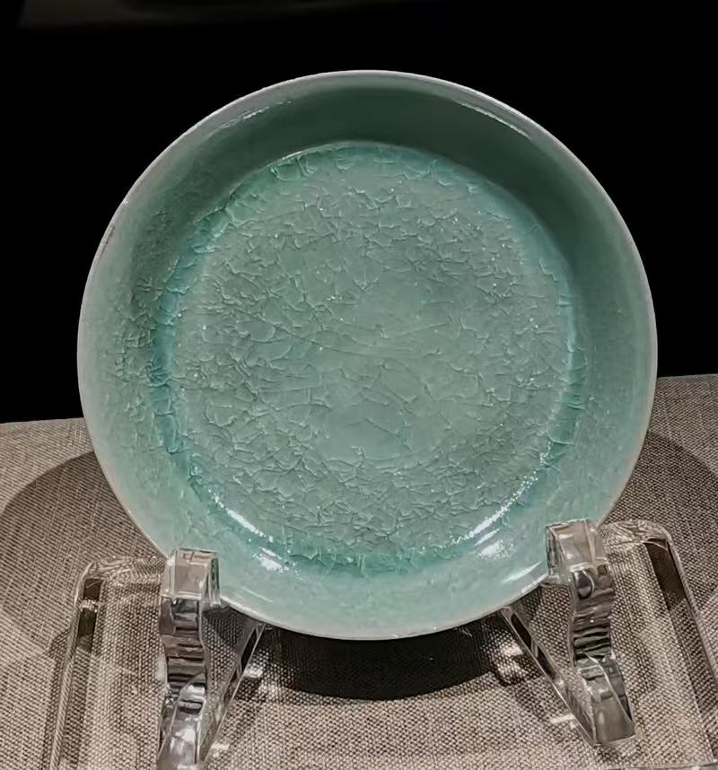
2.汝窑窑址出土瓷片标本
清凉寺官窑残片，直观展示胎土、釉层、烧制工艺细节。
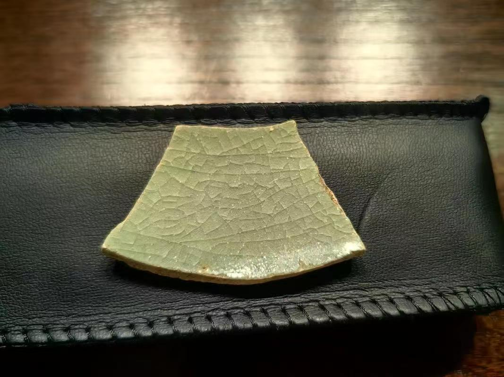
3.宋代汝窑纸槌瓶文物
宫廷陈设器，器型修长简约，釉色均匀温润，存世稀少。
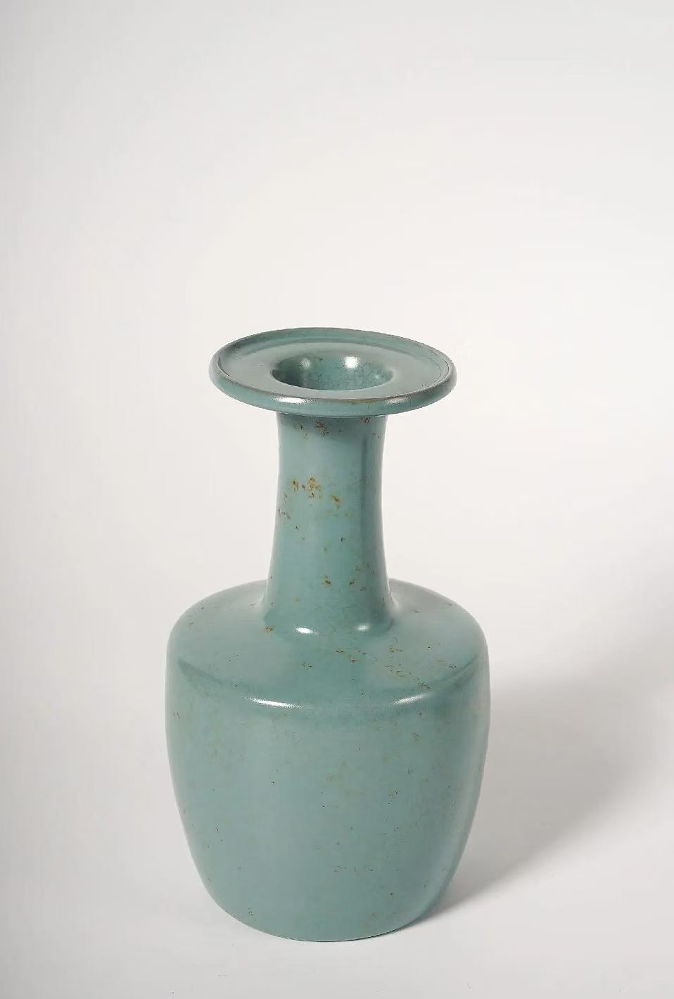
4.古法制瓷取土原料
汝州本地高岭土，宋代官窑专用胎土，汝瓷温润质感基础。
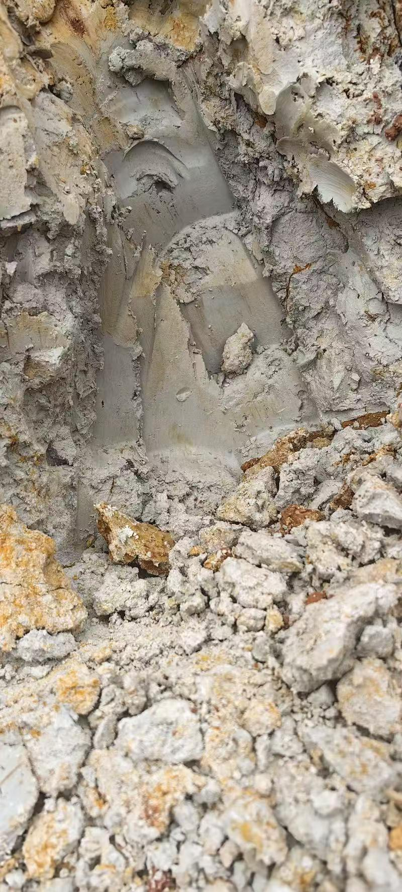
5.汝窑三足洗完整文物
宋代经典文房水洗，三足支撑，通体天青，遍布蟹爪纹开片。
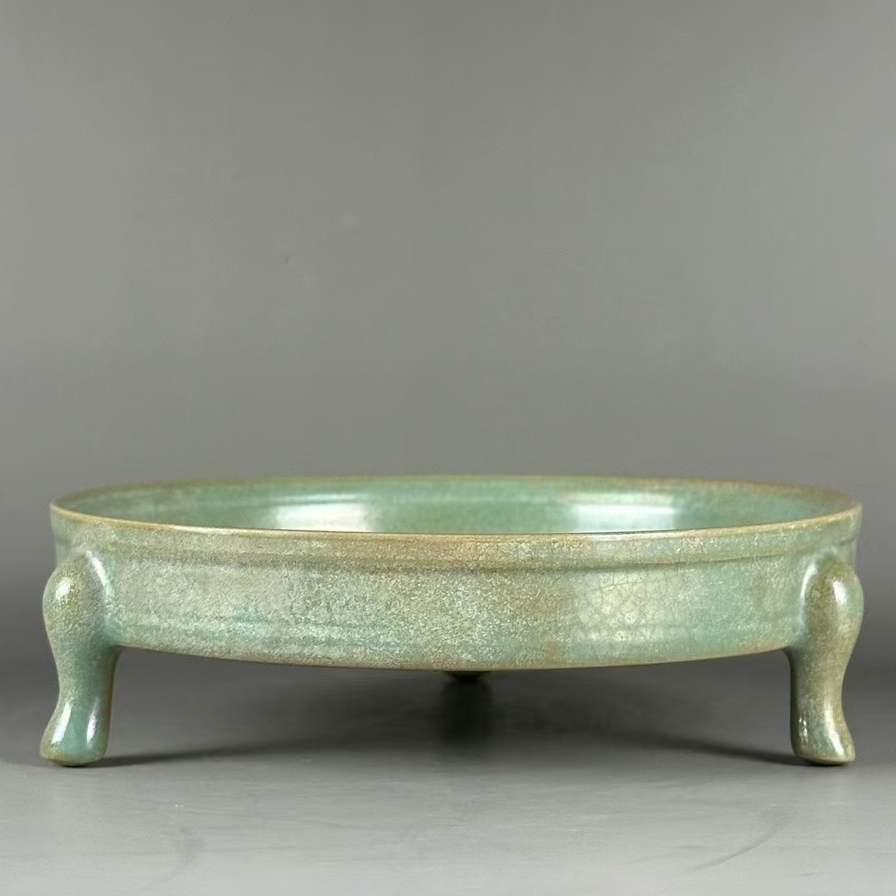
6.古代柴窑匣钵窑具
烧制汝瓷专用匣钵，隔绝烟尘，保证釉面纯净无瑕。
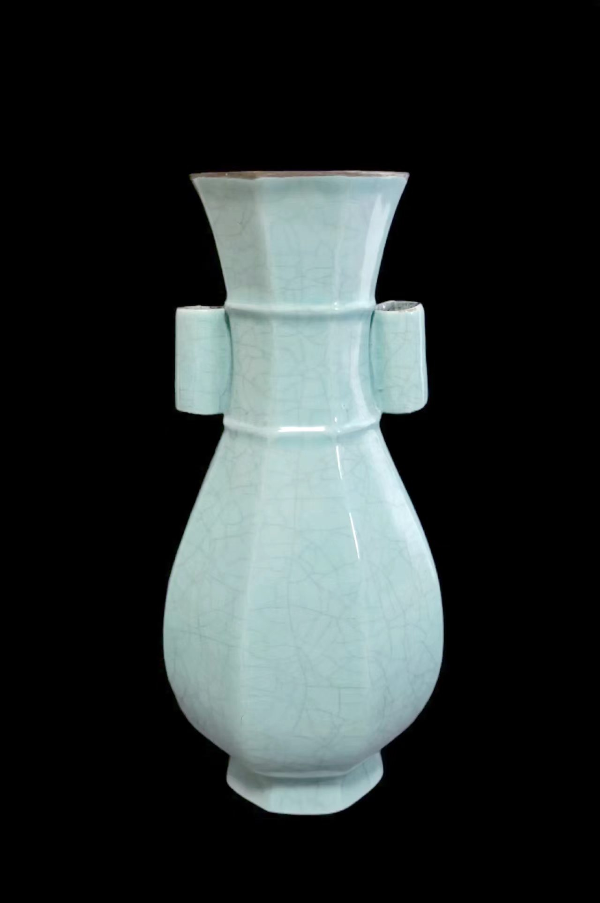
7.汝窑盏托馆藏文物
配套茶盏宋代御用茶具，造型规整，体现宋代饮茶美学。
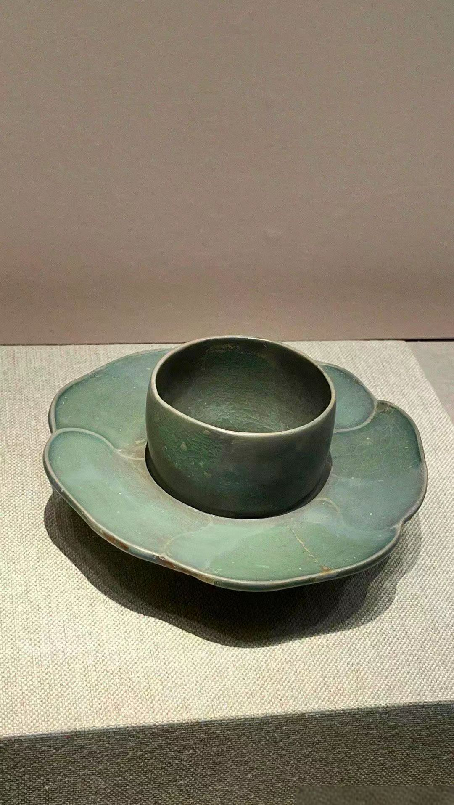
8.汝瓷釉料矿石原料
调配天青釉天然矿物，古代匠人手工研磨配釉。
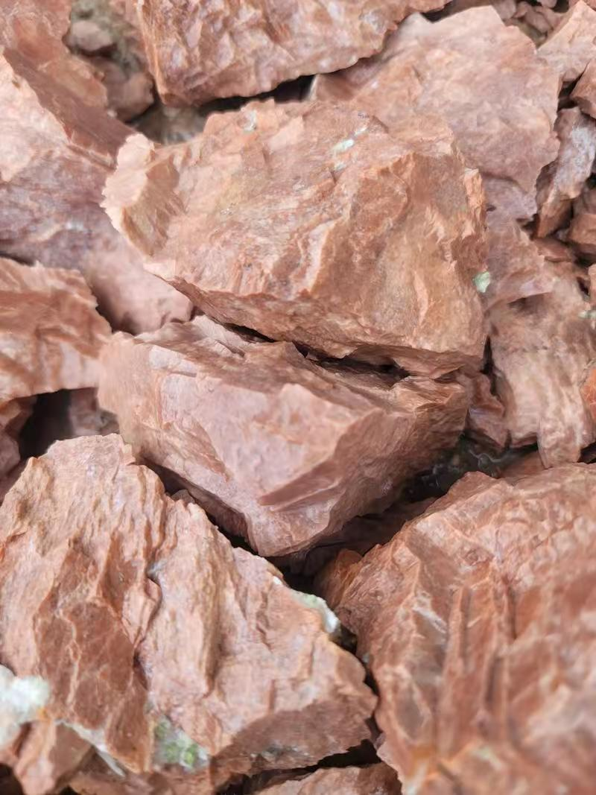
9.传世汝窑莲花碗
仿生莲花造型，线条柔和，天青莹润，宋代皇室日用瓷代表。
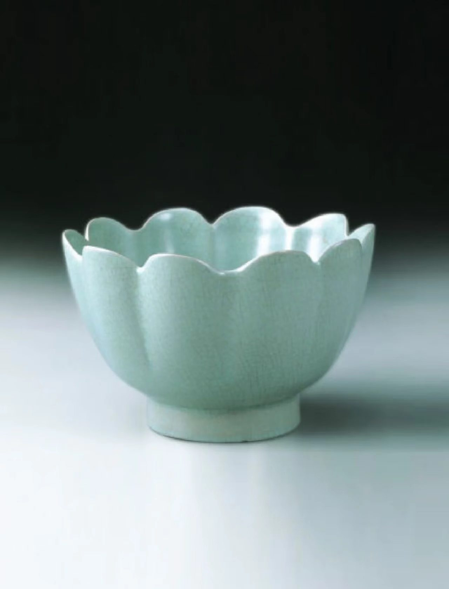
10.汝窑支钉残件
底部芝麻支钉痕迹，区分汝窑与其他窑口核心特征。
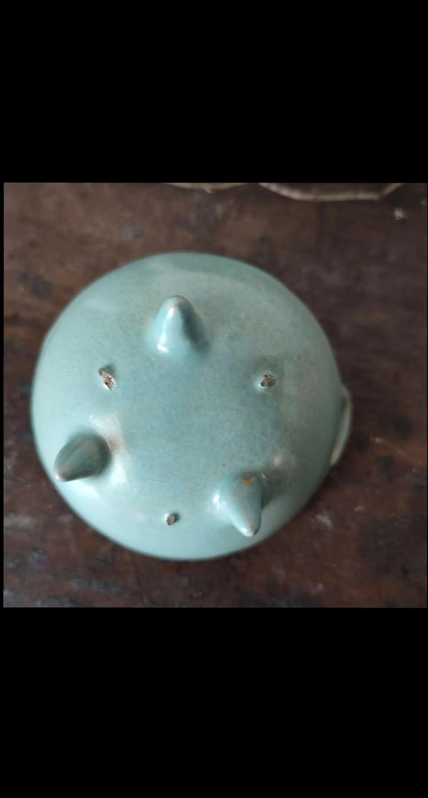
11.汝窑长颈瓶馆藏实拍
宫廷观赏瓷，极简线条，无多余装饰，宋式素雅审美。

12.传统手工拉坯工具
复原宋代转盘、刮板，还原古法拉坯成型工序。
13.汝窑天青釉小盘文物
小型御用果盘，釉色通透，光线下多层淡青渐变。
14.清凉寺考古探方全景
发掘现场完整保留宋代作坊、窑炉、原料堆放遗迹。
15.汝窑水仙盆国宝
顶级馆藏汝瓷，通体无纹，完美诠释雨过天青云破处。
16.手工修胎刀具套装
宋代匠人修胎刀具，打磨器型，保证线条匀称流畅。
17.汝窑弦纹樽馆藏文物
仿古青铜礼器，极简弦纹，宋代皇家祭祀陈设瓷。
18.古法浸釉工艺实拍
素胎浸入釉浆均匀覆釉，汝瓷温润釉层关键步骤。
19.汝窑残片修复成品
考古破损瓷片修复复原，用于展览与学术研究。
20.柴窑松木燃料实拍
古法烧制专用松木，火焰氛围决定天青成色。
21.汝窑茶盏成套文物
完整一套宋代茶盏、盏托，还原宋代饮茶雅集场景。
22.官窑遗址出土窑炉残壁
宋代原始窑炉墙体遗迹，见证千年烧瓷历史。
23.汝瓷自然冰裂纹特写
冷热收缩形成天然开片，每一件纹路独一无二。
24.非遗匠人手工揉泥工序
反复捶打揉捏胎土，去除气泡，保证成品不开裂。
25.小型汝窑文房水滴
宋代文人书房加水器具，小巧雅致，釉色纯净。
26.历代汝瓷收藏古籍记载
明清古籍对汝窑瓷器的文字记录与图谱。
27.汝窑双耳瓶陈设瓷
简约双耳造型，不加繁复装饰，宋代极简美学代表。
28.现代复原柴窑全景
非遗基地复原宋代柴窑，完整复刻古法烧制流程。
29.汝瓷胎土断面细节
香灰胎标志性断面，是鉴定古汝窑核心依据。
30.汝窑文化展馆整体陈列
汝州非遗展馆全部汝窑文物综合展示实拍。